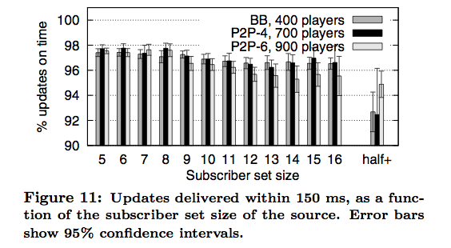

Why?
- Donnybrook is a real word
- "A scene of uproar and disorder; a heated argument"
- Thanks Zach
- Broadband connections are asymmetric
- Upload is the limiting factor
- P2P gaming is overloaded as upload approaches O(n^2)
| space, → | next slide |
| ← | previous slide |
| d | debug mode |
| ## <ret> | go to slide # |
| c | table of contents (vi) |
| f | toggle footer |
| r | reload slides |
| z | toggle help (this) |

 <n% = message goes through forwarder in the <n% quartile
<n% = message goes through forwarder in the <n% quartile
h = header size
Wait for 3s timeout on guidance timeout to detect forwarder drop-out



would have liked to see some math here